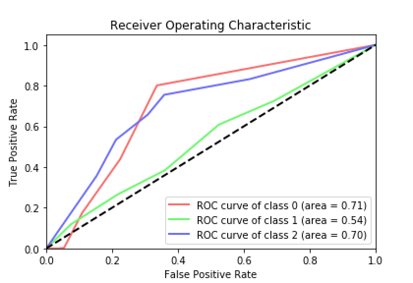
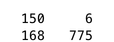

GoHealthy: Increasing mHealth app usage
RESULT
We found the best results when looking at the features mean, variance, and range when using boxcar and sliding window with K nearest neighbor. As you can see in the ROC curve bellow we acheived best results for good (class 2) and bad (class 0) times. Since our goal was to focus on classifying good versus bad times if we ignore the results for netural times we get the following ocnfusion matrix. As you can see it acheived fairly good results. Having precision values of 0.9615 and 0.8218 for class 0 and 2 respectively, recall values of 0.4717 and 0.9923 for class 0 and 2 respectively, and F1-Scores of 0.6329 and 0.8991 for class 0 and 2 respectively.

